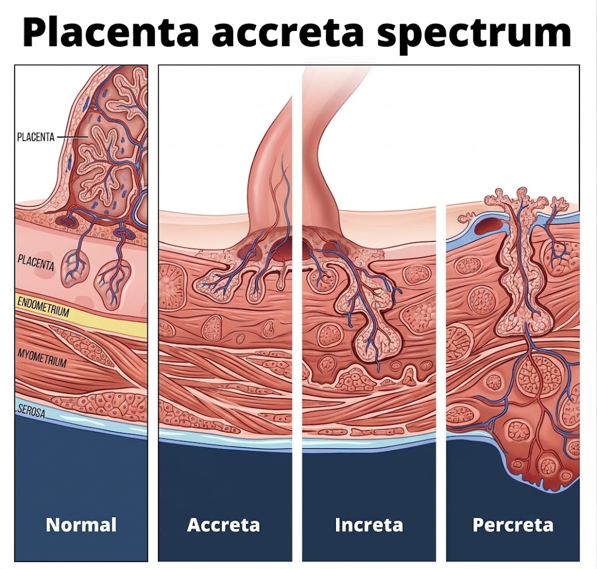

Clinician & sonographer education
Placenta Previa: Confirming the Diagnosis and Driving Delivery Planning
Placenta previa is diagnosed, characterized, and risk-stratified by ultrasound. The quality of the scan and the report defines the pregnancy's risk pathway.
Confirm
Transvaginal ultrasound is the reference standard for the placenta–os relationship.
Characterise
Report the edge-to-os distance in millimeters, using the two-term language.
Screen
Actively exclude vasa previa and placenta accreta spectrum.
Chukwuma Onyeije, MD · OpenMFM
Audience: MFM & obstetric physicians, perinatal sonographers · Evidence review: September 8, 2026
01 / Clinical significance
The scan, not a bleed, now makes this diagnosis
Ultrasound has fully replaced clinical examination. Most cases are first flagged at the routine second-trimester scan — so technique, measurement, and reporting drive counseling, surveillance, and the mode and timing of delivery.
of births complicated by placenta previa at delivery — an absolute indication for cesarean
experience antepartum bleeding
experience postpartum hemorrhage
Getting the scan right is not a formality. It defines the pregnancy's risk pathway.
02 / Learning objectives
What you will be able to do
- Classify and measureApply the two-term system and report the edge-to-os distance in millimeters.
- Scan and optimizePerform the transvaginal assessment and recognize its classic false-positive and false-negative pitfalls.
- Screen for the dangerous associatesInterrogate for vasa previa and placenta accreta spectrum.
- Follow up on scheduleApply the surveillance framework from diagnosis to the pre-operative confirmation scan.
- Connect the scan to the planExplain how the measurement sets mode, timing, and site of delivery.
03 / Background
The placenta does not move — the lower segment grows
Apparent migration is differential growth of the placenta-free uterine wall and development of the lower uterine segment. Roughly 90% of low-lying placentas clear the os before term.
04 / Classification
Report a millimeter distance, not a legacy label
Placental trophotropism is the process by which the placenta grows toward areas of the uterus with a good blood supply and regresses in areas with a poor blood supply.
Do not diagnose previa before 16 weeks — it is markedly over-called earlier because of trophotropism.
05 / Diagnostic standard
Suspicion on the transabdominal scan is the trigger, not the answer
| Transabdominal | Transvaginal | |
|---|---|---|
| Placenta–os relationship | Incorrect in roughly a quarter of cases | Almost always accurate |
| Reported performance for suspected previa | Screening test only | PPV 99%, NPV 98%, false-negative rate 2.3% |
| Safety in previa | — | Safe and well tolerated; does not provoke bleeding |
| Preferred when | Initial survey | Suspected posterior previa, maternal obesity, fibroids |
Confirm every suspected or equivocal case with transvaginal sonography. Previa is not a contraindication to the vaginal probe.
06 / Scanning technique
A repeatable transvaginal workflow
- Screen transabdominallyModerately — not over — filled bladder. A clearly fundal or anterior-high placenta with a wide margin excludes previa.
- Empty the bladderBefore every transvaginal assessment. An over-distended bladder is a classic false positive.
- Insert under real-time viewAdvance only until the cervix and internal os are seen; keep the tip ~2–3 cm away. Avoids pressure artifact and tissue disruption.
- Get a true midsagittal viewDisplay the internal os, external os, and the full endocervical canal, then identify the leading placental edge.
- MeasureShortest distance from the leading edge to the internal os — or document the length of os coverage if the placenta crosses it.
07 / Pitfalls — over-diagnosis
Two mechanisms that create a previa that is not there
Over-distended bladder
Compresses the anterior and posterior lower uterine segment together and apposes the placental edge to the os. A moderate fill helps the transabdominal survey; empty for the transvaginal scan.
Focal myometrial contraction
Can mimic placental tissue or displace the edge. If the “placenta” looks unusually thick or the picture is confusing, wait several minutes and rescan — a contraction relaxes and changes; true placenta does not.
A thick, confusing low placenta is a contraction until a repeat scan proves otherwise.
08 / Pitfalls — missed diagnosis
The engaged head, and the os that is not a point
Shadowing by a deeply engaged head
Especially in the third trimester, a deeply engaged head can shadow and hide a posterior low edge on transabdominal imaging — the classic missed previa. Go transvaginal; use gentle Trendelenburg or manual elevation of the presenting part to open the view.
The internal os is an oval patch
On 3D or multiplanar imaging the internal os is an oval up to ~2 cm across, not a discrete point — a genuine source of interobserver variation. Measure to the nearest point of the os to capture the shortest edge-to-os distance.
09 / Vasa previa
A low placenta is a prompt to look for fetal vessels over the os
Document the cord-insertion site at the anatomy scan, then add transvaginal color and pulsed-wave Doppler over the internal os to detect fetal vessels crossing it. A missed vasa previa carries high perinatal mortality.
Placenta previaLow-lying placenta — even if it later resolvesBilobed / succenturiate lobeVelamentous cord insertionIVF pregnancyMultiple gestation
Resolution of the low placenta does not clear the vasa previa risk. Screen anyway.
10 / Placenta accreta spectrum
Previa plus a uterine scar demands a deliberate PAS evaluation
- Loss or irregularity of the retroplacental clear zone — the single most sensitive sign
- Placental lacunae with turbulent, high-velocity flow
- Myometrial thinning below 1 mm
- Interruption of the bladder-wall / serosa interface
- Uterovesical hypervascularity
Two or more markers reached roughly 81% sensitivity and 99% specificity in one series (Pilloni 2016).
Prior cesarean plus an anterior previa lying over the scar is the highest-risk picture for accreta — escalate to Senior Sonographer and MFM.
11 / Placenta accreta spectrum
Depth of invasion defines the spectrum

The sonographic markers on the previous slide are attempts to detect this: the deeper the invasion, the greater the hemorrhage risk at delivery.
12 / Prognostic markers
Layer bleeding-risk prognosis onto the third-trimester scan
Cervical length
In known previa, a short cervix (≤ ~30–31 mm at 28–34 weeks) predicts antepartum hemorrhage and emergency cesarean before 34 weeks (sensitivity ~61–83%). A useful prognostic add-on, not a universal screening mandate.
High bleeding-risk sonographic markers
Complete coverage of the internal os. A thickened placental edge. An echo-free placental space overlying the os.
A short third-trimester cervix in a patient with previa is a flag for antenatal hemorrhage — document it.
13 / Surveillance
A defensible follow-up framework
14 / Mode of delivery
The millimeter distance sets the delivery route
15 / Timing of delivery
When to deliver — and what moves the date earlier
Stable, asymptomatic previa
Planned cesarean at 36 0/7 – 37 6/7 weeks (SMFM Consult Series #44, 2018), often earlier within that window for an anterior previa.
Imaging suggests coexisting PAS
Planned delivery around 34 weeks with antenatal corticosteroids.
Bleeding overrides gestational age
Active hemorrhage, hemodynamic instability, or a nonreassuring fetal heart rate → deliver regardless of gestational age. Recurrent or worsening bleeds shift timing earlier.
Anterior previa tends to deliver at the earlier end of the 36–37 week window; suspected accreta earlier still.
16 / Site of care
High-risk previa belongs where the hemorrhage team is
Route to Multidisciplinary team, senior sonographer and MFM when…
Imaging suggests placenta accreta spectrum, or the previa is otherwise high risk (complete os coverage, prior cesarean, short cervix, recurrent bleeding).
What the Multidisciplinary team brings
Multidisciplinary planning, major-hemorrhage preparedness and massive-transfusion capability, interventional radiology, and gynecologic-oncology / urology support.
Delivery at a center with a multidisciplinary placenta team and hemorrhage preparedness is associated with lower hemorrhage and complication rates.
17 / Reporting
Eight fields every previa scan documents
1 · Approach
Transabdominal, transvaginal, or both
2 · Bladder status
Filled for survey / emptied for TVS
3 · Edge-to-os distance
In millimeters, or the extent of os coverage
4 · Placental location
Anterior, posterior, or lateral
5 · Cord insertion site
And any bilobed / succenturiate lobe
6 · Vasa previa Doppler
Color and pulsed-wave result over the os
7 · PAS markers
Present or absent, itemized, when there is a scar
8 · Cervical length
In the third trimester
This is the record on which the mode, timing, and site of delivery rest.
18 / Applied scenarios
Run the full bundle on five realistic cases
A · 20-week anatomy scan: placental edge 8 mm from the os, no prior cesarean
Low-lying, not previa. Document cord insertion and interrogate the os with color and pulsed Doppler for vasa previa. Reassure that ~90% resolve; repeat transvaginal imaging at ~32 weeks.
B · Posterior placenta, maternal obesity, transabdominal view equivocal
This is exactly where the transabdominal window fails. Empty the bladder and confirm transvaginally with a true midsagittal view before assigning any label.
C · 32 weeks, known previa, one prior cesarean, anterior, lacunae seen
Anterior previa over the scar with a PAS marker. Itemise all PAS markers, escalate to a placenta-team center, and plan delivery around 34 weeks with antenatal corticosteroids.
D · 36 weeks, low-lying, edge 15 mm, asymptomatic
Edge in the 11–20 mm band: a trial of labor can be offered. Add a third-trimester cervical length as a bleeding-risk prognostic.
E · 29 weeks, previa, active bleeding
Scan now, off the routine schedule. Bleeding with instability or a nonreassuring fetal heart rate mandates delivery regardless of gestational age; otherwise stabilise, give corticosteroids, and shift planned timing earlier.
19 / Evidence & controversies
What is settled, and what is not
Known
Transvaginal ultrasound is the reference standard. The two-term system is the current language. Planned cesarean at 36 0/7 – 37 6/7 weeks for stable previa.
Uncertain
The optimal surveillance interval (milestone scans vs every 2–4 weeks). Cervical length as a universal screen. The precise edge-to-os cutoff for offering a trial of labor (10 vs 20 mm). Whether a routine 28-week scan is needed for major previa.
Legacy tension
Widely quoted resolution statistics — e.g. 84% of “complete” and 98% of “marginal” previas resolving — are reported by the retired four-term categories and should be read as resolution by degree of os coverage.
20 / Clinical pearls
Ten take-home messages
- Suspicion on the transabdominal scan is the trigger for transvaginal imaging, not the diagnosis.
- Empty the bladder before the transvaginal scan — an over-distended bladder fakes a previa.
- Report a millimeter edge-to-os distance, not a legacy label.
- Do not diagnose previa before 16 weeks.
- Wait out a contraction before calling a thick low placenta.
- Elevate a deeply engaged head to unmask a posterior low edge.
- The internal os is an oval patch — measure to its nearest point.
- Screen for vasa previa even when the low placenta has resolved.
- Do a deliberate PAS evaluation whenever previa meets a uterine scar.
- Bleeding overrides gestational age.
21 / Evidence trail
References
- Consensus / practice guidanceReddy UM, Abuhamad AZ, Levine D, Saade GR; Fetal Imaging Workshop Invited Participants. Fetal imaging: executive summary of a joint Eunice Kennedy Shriver NICHD, SMFM, AIUM, ACOG, ACR, SPR, and SRU Fetal Imaging Workshop. Obstet Gynecol / J Ultrasound Med. 2014.
- ReviewOyelese Y. Placenta previa: the evolving role of ultrasound. Ultrasound Obstet Gynecol. 2009.
- Diagnosis & managementOppenheimer L, et al. Diagnosis and management of placenta previa / placental migration. Abdominal Radiology. 2019.
- Educational guidanceKhalil A, et al. Placenta previa and low-lying placenta: diagnosis and management. ISUOG. 2024.
- Methods / measurementSimon EG, et al. Geometry of the internal os and interobserver variation in the placenta-to-os distance. Ultrasound Obstet Gynecol. 2013.
- Diagnostic accuracyPilloni E, et al. Accuracy of ultrasound in antenatal diagnosis of placenta accreta spectrum. Ultrasound Obstet Gynecol. 2016.
- EvidenceEmam D, et al. Cervical length and predictors of placental migration and antepartum hemorrhage in placenta previa. Archives of Gynecology and Obstetrics. 2025.
- Contemporary reviewCassardo O, et al. Placenta previa: contemporary diagnosis and management. American Journal of Obstetrics and Gynecology. 2026.
- Society guidanceSociety for Maternal-Fetal Medicine (SMFM). Consult Series #44 — cited for planned delivery at 36 0/7 – 37 6/7 weeks in stable placenta previa. 2018.
- ReviewSilver RM, Branch DW. Placenta accreta spectrum. New England Journal of Medicine. 2018.
- Clinical reviewYonke N, et al. Placenta previa and low-lying placenta. American Family Physician. 2025.
- Practice parameterACR–ACOG–AIUM–SMFM–SRU practice parameter for the performance of obstetric ultrasound examinations (incl. vasa previa screening). 2023.
Citations reflect the two source documents provided for this presentation; confirm full bibliographic details against the primary literature before formal citation.
22 / Educational notice
Scope, provenance, and review date
The sonographer's bottom line: confirm with transvaginal ultrasound, empty the bladder, measure edge-to-os in millimeters using the two-term language, actively exclude vasa previa with Doppler, screen for placenta accreta spectrum whenever there is a prior cesarean, and add cervical length in the third trimester.
This presentation is for the education of clinicians and perinatal sonographers. It is derived from the two attached source documents and the guidelines they cite, contains no protected health information, and does not replace institutional protocol or individual clinical judgment. Differentiate guideline, evidence, expert guidance, and clinical inference when applying any recommendation here.
Chukwuma Onyeije, MD · OpenMFM
Evidence review: September 8, 2026 · This is an educational synthesis, not a systematic review.